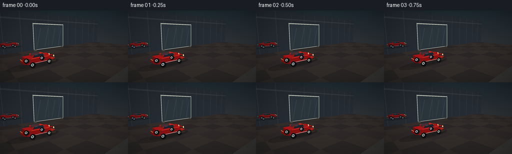
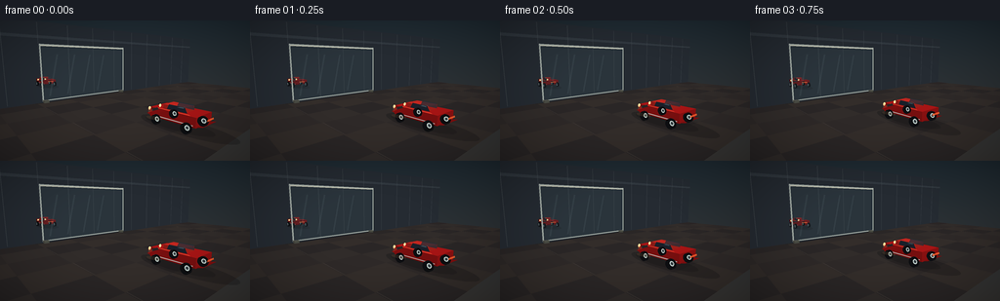
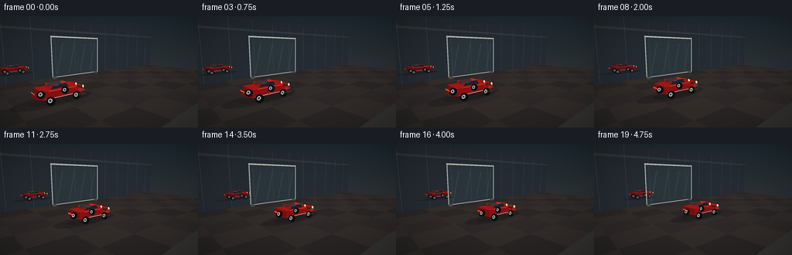
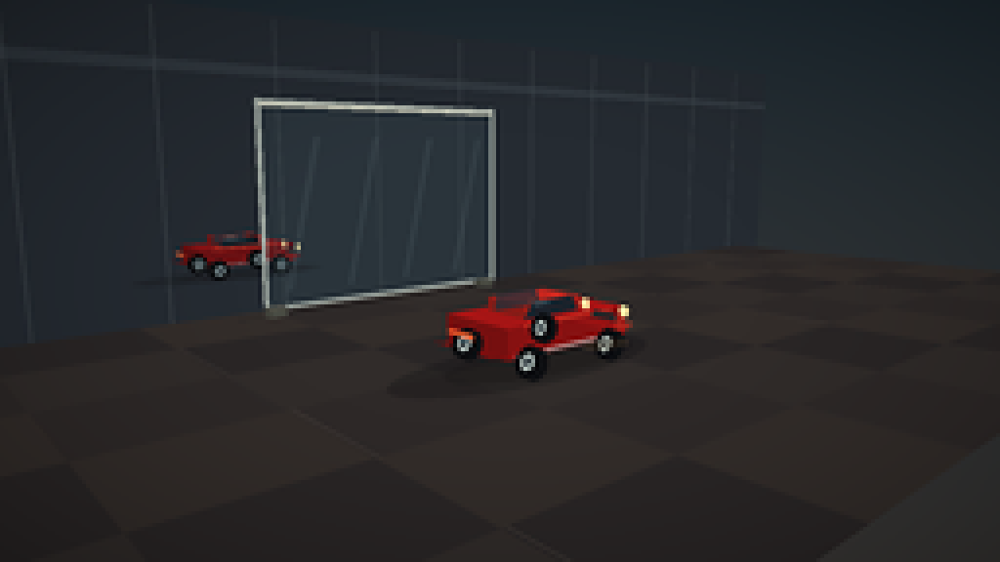
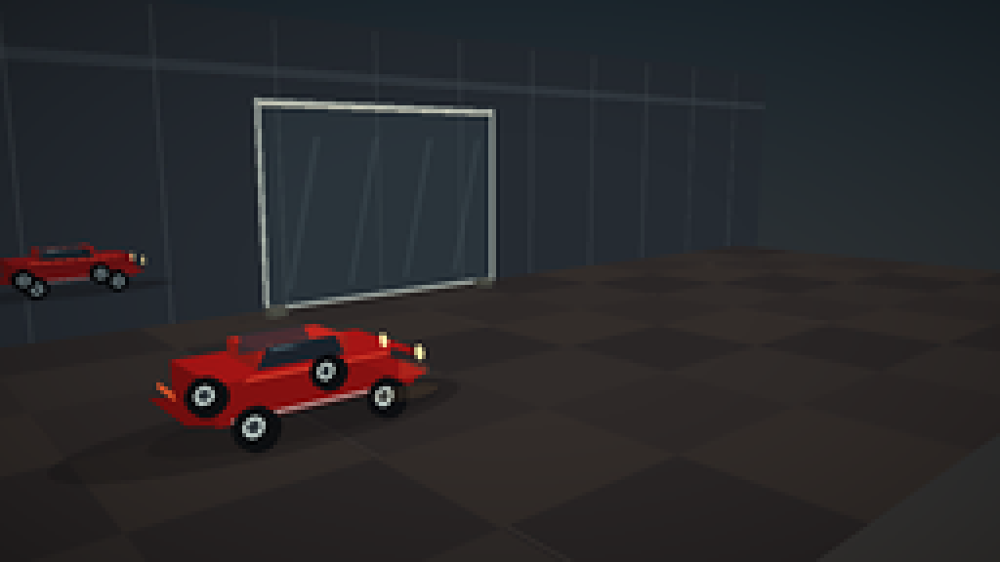
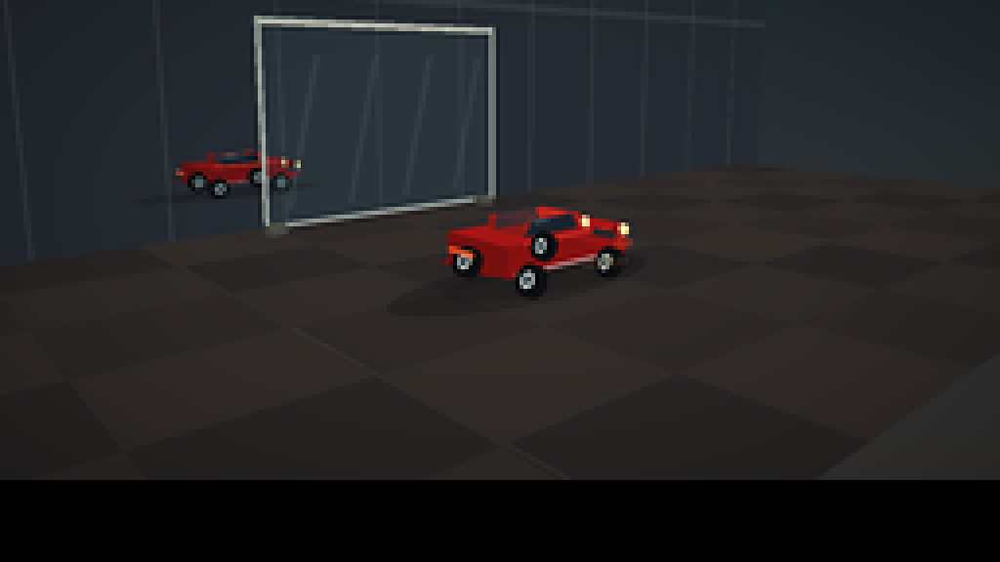
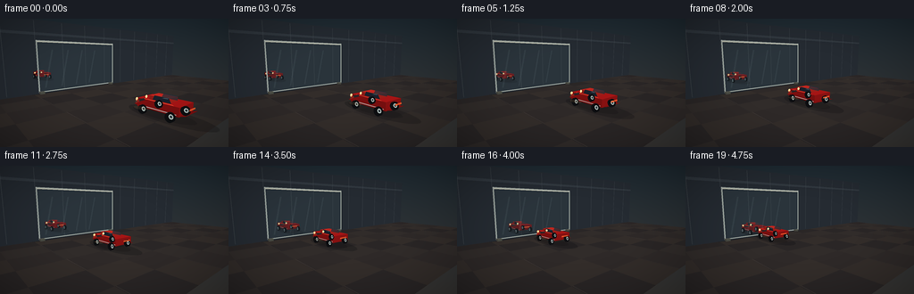
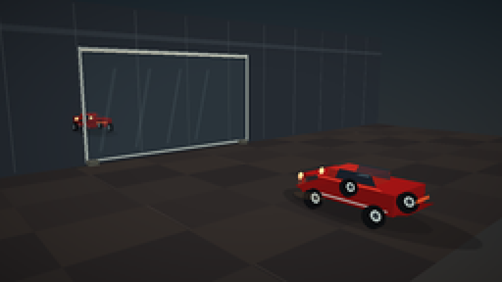
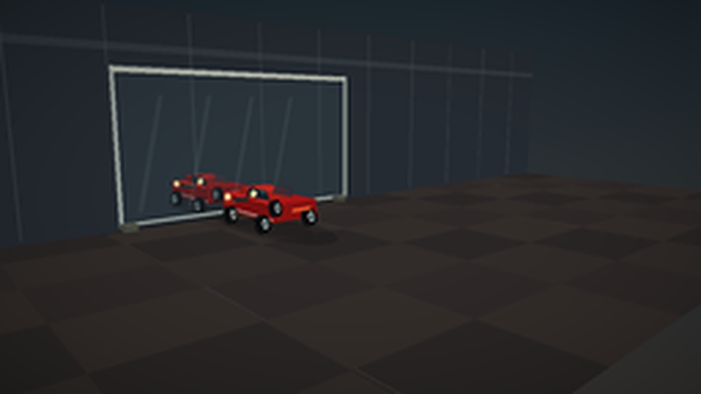

CODING AGENTS AS PIXEL WORLD MODELS
traex/DeepSeek-V4.1-Flash · phygen_063
点击播放 · 原生 RGB 像素
逐轮保存的候选
回放视频、检查图与代码变化。
每份候选均可单独播放。实际图片检查记录在下方工具轨迹中。
候选 01播放与检查图
点击播放 · 原生 RGB 像素


展开代码变化
--- 上一保存版本
+++ 本次保存版本
@@ -0,0 +1,393 @@
+from pathlib import Path
+
+import numpy as np
+from PIL import Image, ImageDraw, ImageFilter
+
+import artifact_io
+
+
+CASE_DIR = Path(__file__).resolve().parent
+W, H = 256, 144
+SS = 4
+N, FPS = 20, 4.0
+
+# A fixed three-quarter camera looking toward the mirror.
+CAM = np.array([-7.0, -8.0, 3.6])
+TARGET = np.array([1.3, 1.6, 1.5])
+UP0 = np.array([0.0, 0.0, 1.0])
+FWD = TARGET - CAM
+FWD /= np.linalg.norm(FWD)
+RIGHT = np.cross(FWD, UP0)
+RIGHT /= np.linalg.norm(RIGHT)
+UP = np.cross(RIGHT, FWD)
+FOCAL = (H * SS / 2) / np.tan(np.radians(20.0))
+
+LIGHT = np.array([-0.45, -0.65, 1.0])
+LIGHT /= np.linalg.norm(LIGHT)
+MIRROR_Y = 8.0
+MIRROR_X = (0.0, 6.6)
+MIRROR_Z = (0.15, 4.75)
+
+
+def project(points):
+ points = np.asarray(points, dtype=np.float64)
+ delta = points - CAM
+ depth = delta @ FWD
+ x = W * SS / 2 + FOCAL * (delta @ RIGHT) / depth
+ y = H * SS / 2 - FOCAL * (delta @ UP) / depth
+ return np.stack([x, y], axis=-1)
+
+
+def unit(v):
+ v = np.asarray(v, dtype=np.float64)
+ return v / np.linalg.norm(v)
+
+
+def face_normal(points):
+ n = np.cross(points[1] - points[0], points[2] - points[0])
+ length = np.linalg.norm(n)
+ return n / length if length else n
+
+
+def shade(rgb, points, ambient=0.42, power=1.0):
+ n = face_normal(points)
+ if n @ (CAM - points.mean(axis=0)) < 0:
+ n = -n
+ amount = ambient + (1.0 - ambient) * max(0.0, float(n @ LIGHT))
+ return tuple(np.clip(np.array(rgb) * amount**power, 0, 255).astype(np.uint8))
+
+
+def polygon_mask(shape, pts):
+ canvas = Image.new("L", (shape[1], shape[0]), 0)
+ draw = ImageDraw.Draw(canvas)
+ draw.polygon([tuple(map(float, p)) for p in pts], fill=255)
+ return np.asarray(canvas, dtype=np.float32) / 255.0
+
+
+def add_polygon(image, pts, color, alpha=1.0):
+ mask = polygon_mask((H * SS, W * SS), pts)[..., None] * alpha
+ color = np.array(color, dtype=np.float32)
+ image[:] = image * (1.0 - mask) + color * mask
+
+
+def add_quad(image, points, color, alpha=1.0, ambient=0.42):
+ p = project(points)
+ add_polygon(image, p, shade(color, points, ambient), alpha)
+
+
+def add_triangle(image, points, color, alpha=1.0, ambient=0.42):
+ p = project(points)
+ add_polygon(image, p, shade(color, points, ambient), alpha)
+
+
+def add_box(image, center, size, color, alpha=1.0):
+ cx, cy, cz = center
+ sx, sy, sz = np.array(size) / 2
+ vertices = np.array([
+ [cx - sx, cy - sy, cz - sz], [cx + sx, cy - sy, cz - sz],
+ [cx + sx, cy + sy, cz - sz], [cx - sx, cy + sy, cz - sz],
+ [cx - sx, cy - sy, cz + sz], [cx + sx, cy - sy, cz + sz],
+ [cx + sx, cy + sy, cz + sz], [cx - sx, cy + sy, cz + sz],
+ ])
+ faces = [(0, 1, 2, 3), (4, 7, 6, 5), (0, 4, 5, 1),
+ (1, 5, 6, 2), (2, 6, 7, 3), (3, 7, 4, 0)]
+ depths = sorted(faces, key=lambda f: np.mean((vertices[list(f)] - CAM) @ FWD), reverse=True)
+ for face in depths:
+ add_quad(image, vertices[list(face)], color, alpha)
+
+
+def add_cylinder(image, base, axis, radius, height, color, sides=28, alpha=1.0,
+ cap=True, outline=None):
+ base = np.asarray(base, dtype=np.float64)
+ axis = unit(axis)
+ helper = np.array([0.0, 0.0, 1.0])
+ if abs(axis @ helper) > 0.92:
+ helper = np.array([1.0, 0.0, 0.0])
+ u = unit(np.cross(axis, helper))
+ v = unit(np.cross(axis, u))
+ rings = []
+ for amount in (0.0, height):
+ theta = np.linspace(0, 2 * np.pi, sides, endpoint=False)
+ rings.append(base + amount * axis + radius * (
+ np.cos(theta)[:, None] * u + np.sin(theta)[:, None] * v
+ ))
+ for i in range(sides):
+ j = (i + 1) % sides
+ quad = np.array([rings[0][i], rings[0][j], rings[1][j], rings[1][i]])
+ normal = face_normal(quad)
+ if normal @ (CAM - quad.mean(axis=0)) < 0:
+ normal = -normal
+ diffuse = 0.34 + 0.66 * max(0.0, float(normal @ LIGHT))
+ face_color = np.clip(np.array(color) * diffuse, 0, 255)
+ add_polygon(image, project(quad), face_color, alpha)
+ if outline is not None:
+ # Thin, deterministic edge for the tire silhouette.
+ add_polygon(image, project(quad), outline, 0.08)
+ if cap:
+ for ring in rings:
+ add_polygon(image, project(ring), np.clip(np.array(color) * 0.65, 0, 255), alpha)
+
+
+def add_disc(image, center, normal, radius, color, sides=32, alpha=1.0):
+ center = np.asarray(center, dtype=np.float64)
+ normal = unit(normal)
+ helper = np.array([0.0, 0.0, 1.0])
+ if abs(normal @ helper) > 0.9:
+ helper = np.array([1.0, 0.0, 0.0])
+ u = unit(np.cross(normal, helper))
+ v = unit(np.cross(normal, u))
+ theta = np.linspace(0, 2 * np.pi, sides, endpoint=False)
+ ring = center + radius * (np.cos(theta)[:, None] * u + np.sin(theta)[:, None] * v)
+ add_polygon(image, project(ring), color, alpha)
+
+
+def mirror_point(p, mirror_y=MIRROR_Y):
+ q = np.array(p, dtype=np.float64, copy=True)
+ q[..., 1] = 2 * mirror_y - q[..., 1]
+ return q
+
+
+def mirrored_boxes(car_x):
+ # The mirror image is a second virtual car behind the glass plane.
+ return [
+ ((car_x, 16.0 - 1.5, 0.69), (2.75, 1.55, 0.56), (184, 25, 25)),
+ ((car_x - 0.13, 15.72, 1.04), (1.38, 0.95, 0.28), (213, 41, 35)),
+ ((car_x - 0.02, 16.0, 1.15), (0.98, 0.84, 0.18), (40, 55, 66)),
+ ((car_x - 0.98, 16.0, 0.82), (0.22, 1.22, 0.34), (46, 49, 53)),
+ ((car_x + 1.17, 16.0, 0.82), (0.22, 1.22, 0.34), (46, 49, 53)),
+ ]
+
+
+def draw_floor(image):
+ # Warm studio floor, made from broad geometric tiles.
+ floor_colors = [(48, 43, 42), (51, 46, 44), (44, 40, 40), (53, 47, 44)]
+ for ix, x0 in enumerate(np.arange(-8, 20, 2.8)):
+ for iy, y0 in enumerate(np.arange(-5, 9, 2.3)):
+ x1, y1 = x0 + 2.8, y0 + 2.3
+ if y0 >= MIRROR_Y - 0.05:
+ continue
+ points = np.array([[x0, y0, 0], [x1, y0, 0], [x1, y1, 0], [x0, y1, 0]])
+ color = floor_colors[(ix + iy) % len(floor_colors)]
+ add_quad(image, points, color, ambient=0.84)
+ if ix % 2 == 0 and iy % 2 == 0:
+ # A restrained seam and a few small surface highlights.
+ seam = np.array([[x0 + 0.04, y0, 0.002], [x0 + 0.07, y0, 0.002],
+ [x0 + 0.07, y1, 0.002], [x0 + 0.04, y1, 0.002]])
+ add_quad(image, seam, (86, 77, 70), alpha=0.42, ambient=1.0)
+
+
+def draw_back_wall(image):
+ add_quad(image, np.array([[-8, 8.04, 0], [20, 8.04, 0],
+ [20, 8.04, 6.5], [-8, 8.04, 6.5]]),
+ (39, 46, 53), ambient=0.9)
+ # Vertical wall panels and a subtle horizon light.
+ for x in np.arange(-7, 20, 2.5):
+ add_quad(image, np.array([[x, 8.03, 0.1], [x + 0.035, 8.03, 0.1],
+ [x + 0.035, 8.03, 6.4], [x, 8.03, 6.4]]),
+ (66, 73, 78), alpha=0.55, ambient=1.0)
+ add_quad(image, np.array([[-8, 8.02, 5.2], [20, 8.02, 5.2],
+ [20, 8.02, 5.42], [-8, 8.02, 5.42]]),
+ (74, 84, 91), alpha=0.33, ambient=1.0)
+
+
+def draw_glass_and_frame(image):
+ x0, x1 = MIRROR_X
+ z0, z1 = MIRROR_Z
+ # Shadow just behind the standing glass.
+ add_quad(image, np.array([[x0 - 0.35, MIRROR_Y + 0.035, 0.01],
+ [x1 + 0.42, MIRROR_Y + 0.035, 0.01],
+ [x1 + 0.60, MIRROR_Y + 0.12, 0.01],
+ [x0 - 0.55, MIRROR_Y + 0.12, 0.01]]),
+ (22, 24, 27), alpha=0.55, ambient=1.0)
+ # Thin glass surface: transparent cool-blue tint.
+ add_quad(image, np.array([[x0, MIRROR_Y, z0], [x1, MIRROR_Y, z0],
+ [x1, MIRROR_Y, z1], [x0, MIRROR_Y, z1]]),
+ (67, 93, 102), alpha=0.18, ambient=1.0)
+ # Soft diagonal reflection bands on the glass.
+ for k in range(4):
+ xx = x0 + 0.55 + k * 1.55
+ band = np.array([[xx, MIRROR_Y - 0.005, 0.55],
+ [xx + 0.12, MIRROR_Y - 0.005, 0.55],
+ [xx + 0.92, MIRROR_Y - 0.005, 3.95],
+ [xx + 0.79, MIRROR_Y - 0.005, 3.95]])
+ add_quad(image, band, (178, 207, 208), alpha=0.065, ambient=1.0)
+ # Slim metal frame.
+ width = 0.095
+ for pts in [
+ [[x0, MIRROR_Y, z0], [x1, MIRROR_Y, z0],
+ [x1, MIRROR_Y, z0 + width], [x0, MIRROR_Y, z0 + width]],
+ [[x0, MIRROR_Y, z1 - width], [x1, MIRROR_Y, z1 - width],
+ [x1, MIRROR_Y, z1], [x0, MIRROR_Y, z1]],
+ [[x0, MIRROR_Y, z0], [x0 + width, MIRROR_Y, z0],
+ [x0 + width, MIRROR_Y, z1], [x0, MIRROR_Y, z1]],
+ [[x1 - width, MIRROR_Y, z0], [x1, MIRROR_Y, z0],
+ [x1, MIRROR_Y, z1], [x1 - width, MIRROR_Y, z1]],
+ ]:
+ add_quad(image, np.array(pts), (167, 176, 169), alpha=0.95, ambient=0.95)
+ # A crisp top highlight and restrained base blocks.
+ add_quad(image, np.array([[x0 + 0.1, MIRROR_Y - 0.01, z1 - 0.16],
+ [x1 - 0.1, MIRROR_Y - 0.01, z1 - 0.16],
+ [x1 - 0.1, MIRROR_Y - 0.01, z1 - 0.08],
+ [x0 + 0.1, MIRROR_Y - 0.01, z1 - 0.08]]),
+ (231, 229, 205), alpha=0.8, ambient=1.0)
+ add_box(image, (x0 + 0.29, MIRROR_Y + 0.08, 0.10), (0.38, 0.3, 0.2),
+ (103, 105, 94), alpha=0.9)
+ add_box(image, (x1 - 0.29, MIRROR_Y + 0.08, 0.10), (0.38, 0.3, 0.2),
+ (103, 105, 94), alpha=0.9)
+
+
+def draw_car_shadow(image, car_x, mirrored=False):
+ y = 16.0 - 1.5 if mirrored else 1.5
+ z = 0.014
+ strength = 0.55 if mirrored else 0.72
+ # Two overlapping ellipses form a soft, directional floor shadow.
+ for offset, length, width, opacity in [(-0.18, 2.85, 1.12, 0.38),
+ (0.18, 2.15, 0.84, 0.33)]:
+ center = np.array([car_x + offset, y, z])
+ normal = np.array([0, 0, 1.0])
+ ring = []
+ for angle in np.linspace(0, 2 * np.pi, 36, endpoint=False):
+ ring.append(center + np.array([length * np.cos(angle),
+ width * np.sin(angle), 0]))
+ add_polygon(image, project(np.array(ring)), (16, 15, 17), strength * opacity)
+
+
+def draw_car(image, car_x, mirrored=False, wheel_phase=0.0):
+ y = 16.0 - 1.5 if mirrored else 1.5
+ sign = -1.0 if mirrored else 1.0
+ # Mirrored geometry is seen through glass and is deliberately cooler/dimmer.
+ if mirrored:
+ body = (151, 25, 27)
+ roof = (172, 36, 35)
+ dark = (27, 36, 44)
+ chrome = (130, 150, 153)
+ headlight = (241, 217, 151)
+ tire = (19, 22, 26)
+ else:
+ body = (190, 25, 25)
+ roof = (219, 44, 36)
+ dark = (30, 43, 55)
+ chrome = (192, 207, 202)
+ headlight = (255, 235, 163)
+ tire = (21, 23, 27)
+
+ draw_car_shadow(image, car_x, mirrored)
+
+ # Main low-slung body and slightly tapered nose.
+ add_box(image, (car_x, y, 0.66), (2.78, 1.52, 0.52), body)
+ add_quad(image, np.array([
+ [car_x - 1.40, y - 0.72, 0.42], [car_x - 1.72, y - 0.68, 0.49],
+ [car_x - 1.72, y + 0.68, 0.49], [car_x - 1.40, y + 0.72, 0.42],
+ ]), shade(body, np.array([[car_x - 1.4, y, 0.8],
+ [car_x - 1.7, y, 0.8],
+ [car_x - 1.7, y, 0.4]]), 0.55), alpha=1.0)
+ add_quad(image, np.array([
+ [car_x + 1.39, y - 0.71, 0.43], [car_x + 1.68, y - 0.67, 0.5],
+ [car_x + 1.68, y + 0.67, 0.5], [car_x + 1.39, y + 0.71, 0.43],
+ ]), shade(body, np.array([[car_x + 1.4, y, 0.8],
+ [car_x + 1.7, y, 0.8],
+ [car_x + 1.7, y, 0.4]]), 0.72), alpha=1.0)
+ # Red hood highlight, side door seam, and a low chrome rocker.
+ add_quad(image, np.array([
+ [car_x - 1.05, y - 0.77, 0.90], [car_x + 1.02, y - 0.77, 0.90],
+ [car_x + 0.94, y - 0.78, 0.94], [car_x - 0.98, y - 0.78, 0.94],
+ ]), (236, 73, 49), alpha=0.75, ambient=1.0)
+ add_quad(image, np.array([
+ [car_x - 1.22, y - 0.775, 0.42], [car_x + 1.18, y - 0.775, 0.42],
+ [car_x + 1.18, y - 0.775, 0.47], [car_x - 1.22, y - 0.775, 0.47],
+ ]), chrome, alpha=0.72, ambient=1.0)
+ # Cabin: dark windshield, roof, and rear window.
+ add_box(image, (car_x - 0.10, y, 1.05), (1.28, 0.91, 0.25), roof)
+ add_quad(image, np.array([
+ [car_x - 0.72, y - 0.43, 0.92], [car_x + 0.50, y - 0.43, 0.92],
+ [car_x + 0.35, y - 0.46, 1.20], [car_x - 0.58, y - 0.46, 1.20],
+ ]), dark, alpha=0.97, ambient=0.68)
+ add_quad(image, np.array([
+ [car_x - 0.60, y + 0.455, 0.92], [car_x + 0.48, y + 0.455, 0.92],
+ [car_x + 0.34, y + 0.465, 1.19], [car_x - 0.56, y + 0.465, 1.19],
+ ]), (38, 53, 63), alpha=0.75, ambient=0.8)
+ # Window highlights.
+ add_quad(image, np.array([
+ [car_x - 0.55, y - 0.471, 1.13], [car_x - 0.17, y - 0.473, 1.13],
+ [car_x - 0.31, y - 0.472, 1.18], [car_x - 0.54, y - 0.472, 1.18],
+ ]), (108, 138, 147), alpha=0.48, ambient=1.0)
+ # Wheels, seen as short cylinders along Y.
+ for wx in (car_x - 0.93, car_x + 0.93):
+ for wy in (y - 0.82, y + 0.82):
+ add_cylinder(image, (wx, wy - 0.09 * sign, 0.30),
+ (0, sign * 0.18, 0), 0.27, 0.18, tire, sides=24)
+ add_disc(image, (wx, wy + sign * 0.095, 0.30),
+ (0, sign, 0), 0.14, chrome, sides=20, alpha=0.95)
+ add_disc(image, (wx, wy + sign * 0.102, 0.30),
+ (0, sign, 0), 0.075, (53, 62, 67), sides=18)
+ # Lights and grille on the nose.
+ for dz in (0.74,):
+ for dy in (-0.48, 0.48):
+ add_disc(image, (car_x + 1.70, y + dy, dz), (1, 0, 0),
+ 0.105, headlight, sides=18, alpha=1.0)
+ add_quad(image, np.array([
+ [car_x + 1.705, y - 0.31, 0.51], [car_x + 1.705, y + 0.31, 0.51],
+ [car_x + 1.705, y + 0.26, 0.66], [car_x + 1.705, y - 0.26, 0.66],
+ ]), (33, 38, 40), alpha=0.9, ambient=1.0)
+ add_quad(image, np.array([
+ [car_x - 1.705, y - 0.33, 0.70], [car_x - 1.705, y + 0.33, 0.70],
+ [car_x - 1.705, y + 0.29, 0.80], [car_x - 1.705, y - 0.29, 0.80],
+ ]), (255, 97, 45), alpha=0.8, ambient=1.0)
+ # A small roof highlight gives the toy finish.
+ add_quad(image, np.array([
+ [car_x - 0.53, y - 0.32, 1.185], [car_x + 0.16, y - 0.32, 1.185],
+ [car_x + 0.10, y - 0.36, 1.195], [car_x - 0.47, y - 0.36, 1.195],
+ ]), (255, 110, 71), alpha=0.45, ambient=1.0)
+
+
+def draw_scene(frame_index):
+ image = np.empty((H * SS, W * SS, 3), dtype=np.float32)
+ # Soft studio backdrop gradient, all geometry remains crisp at 4x.
+ yy = np.linspace(0, 1, H * SS, dtype=np.float32)[:, None, None]
+ top = np.array([31, 43, 51], dtype=np.float32)
+ bottom = np.array([57, 55, 53], dtype=np.float32)
+ image[:] = top * (1 - yy) + bottom * yy
+
+ draw_back_wall(image)
+ draw_floor(image)
+
+ # Car starts far enough left to read clearly, then advances toward the glass.
+ t = frame_index / (N - 1)
+ car_x = -2.45 + 4.55 * t
+ draw_car(image, car_x, mirrored=True, wheel_phase=t)
+ draw_glass_and_frame(image)
+ draw_car(image, car_x, mirrored=False, wheel_phase=t)
+
+ # Add a warm front fill to the car's leading edge.
+ hood = np.array([[car_x + 1.20, 0.78, 0.79], [car_x + 1.66, 0.78, 0.60],
+ [car_x + 1.66, 0.78, 0.49], [car_x + 1.20, 0.78, 0.49]])
+ add_quad(image, hood, (243, 81, 53), alpha=0.26, ambient=1.0)
+
+ # Tiny warm pool on the floor under the approaching headlights.
+ pool = []
+ for angle in np.linspace(0, 2 * np.pi, 30, endpoint=False):
+ pool.append([car_x + 1.78 + 0.56 * np.cos(angle), 1.5 + 0.30 * np.sin(angle), 0.006])
+ add_polygon(image, project(np.array(pool)), (142, 108, 66), 0.18)
+
+ # Gentle vignette, applied after the geometric render.
+ xg = np.linspace(-1, 1, W * SS, dtype=np.float32)[None, :]
+ yg = np.linspace(-1, 1, H * SS, dtype=np.float32)[:, None]
+ vignette = np.clip(1.05 - 0.18 * (xg * xg + yg * yg), 0, 1)[..., None]
+ image *= vignette
+
+ # Downsample with a mild sharpening pass; no external renderer is involved.
+ small = Image.fromarray(np.clip(image, 0, 255).astype(np.uint8))
+ small = small.resize((W, H), Image.Resampling.LANCZOS)
+ arr = np.asarray(small, dtype=np.float32)
+ blurred = np.asarray(small.filter(ImageFilter.GaussianBlur(0.55)), dtype=np.float32)
+ arr = np.clip(arr + 0.20 * (arr - blurred), 0, 255).astype(np.uint8)
+ return arr
+
+
+def main():
+ frames = np.stack([draw_scene(i) for i in range(N)])
+ artifact_io.save(frames, CASE_DIR)
+
+
+if __name__ == "__main__":
+ main()
候选 02播放与检查图
点击播放 · 原生 RGB 像素


展开代码变化
--- 上一保存版本
+++ 本次保存版本
@@ -25,7 +25,7 @@
LIGHT = np.array([-0.45, -0.65, 1.0])
LIGHT /= np.linalg.norm(LIGHT)
MIRROR_Y = 8.0
-MIRROR_X = (0.0, 6.6)
+MIRROR_X = (-2.0, 6.6)
MIRROR_Z = (0.15, 4.75)
@@ -162,10 +162,9 @@
# Warm studio floor, made from broad geometric tiles.
floor_colors = [(48, 43, 42), (51, 46, 44), (44, 40, 40), (53, 47, 44)]
for ix, x0 in enumerate(np.arange(-8, 20, 2.8)):
- for iy, y0 in enumerate(np.arange(-5, 9, 2.3)):
+ for iy, y0 in enumerate(np.arange(-5, 8.25, 2.3)):
x1, y1 = x0 + 2.8, y0 + 2.3
- if y0 >= MIRROR_Y - 0.05:
- continue
+ y1 = min(y1, 8.25)
points = np.array([[x0, y0, 0], [x1, y0, 0], [x1, y1, 0], [x0, y1, 0]])
color = floor_colors[(ix + iy) % len(floor_colors)]
add_quad(image, points, color, ambient=0.84)
@@ -177,16 +176,16 @@
def draw_back_wall(image):
- add_quad(image, np.array([[-8, 8.04, 0], [20, 8.04, 0],
- [20, 8.04, 6.5], [-8, 8.04, 6.5]]),
+ add_quad(image, np.array([[-8, 8.25, 0], [20, 8.25, 0],
+ [20, 8.25, 6.5], [-8, 8.25, 6.5]]),
(39, 46, 53), ambient=0.9)
# Vertical wall panels and a subtle horizon light.
for x in np.arange(-7, 20, 2.5):
- add_quad(image, np.array([[x, 8.03, 0.1], [x + 0.035, 8.03, 0.1],
- [x + 0.035, 8.03, 6.4], [x, 8.03, 6.4]]),
+ add_quad(image, np.array([[x, 8.24, 0.1], [x + 0.035, 8.24, 0.1],
+ [x + 0.035, 8.24, 6.4], [x, 8.24, 6.4]]),
(66, 73, 78), alpha=0.55, ambient=1.0)
- add_quad(image, np.array([[-8, 8.02, 5.2], [20, 8.02, 5.2],
- [20, 8.02, 5.42], [-8, 8.02, 5.42]]),
+ add_quad(image, np.array([[-8, 8.23, 5.2], [20, 8.23, 5.2],
+ [20, 8.23, 5.42], [-8, 8.23, 5.42]]),
(74, 84, 91), alpha=0.33, ambient=1.0)
@@ -236,24 +235,24 @@
(103, 105, 94), alpha=0.9)
-def draw_car_shadow(image, car_x, mirrored=False):
- y = 16.0 - 1.5 if mirrored else 1.5
+def draw_car_shadow(image, car_x, car_y, mirrored=False):
+ y = 16.0 - car_y if mirrored else car_y
z = 0.014
strength = 0.55 if mirrored else 0.72
# Two overlapping ellipses form a soft, directional floor shadow.
for offset, length, width, opacity in [(-0.18, 2.85, 1.12, 0.38),
(0.18, 2.15, 0.84, 0.33)]:
- center = np.array([car_x + offset, y, z])
+ center = np.array([car_x, y + offset, z])
normal = np.array([0, 0, 1.0])
ring = []
for angle in np.linspace(0, 2 * np.pi, 36, endpoint=False):
- ring.append(center + np.array([length * np.cos(angle),
- width * np.sin(angle), 0]))
+ ring.append(center + np.array([width * np.cos(angle),
+ length * np.sin(angle), 0]))
add_polygon(image, project(np.array(ring)), (16, 15, 17), strength * opacity)
-def draw_car(image, car_x, mirrored=False, wheel_phase=0.0):
- y = 16.0 - 1.5 if mirrored else 1.5
+def draw_car(image, car_x, car_y, mirrored=False, wheel_phase=0.0):
+ y = 16.0 - car_y if mirrored else car_y
sign = -1.0 if mirrored else 1.0
# Mirrored geometry is seen through glass and is deliberately cooler/dimmer.
if mirrored:
@@ -271,72 +270,72 @@
headlight = (255, 235, 163)
tire = (21, 23, 27)
- draw_car_shadow(image, car_x, mirrored)
-
- # Main low-slung body and slightly tapered nose.
- add_box(image, (car_x, y, 0.66), (2.78, 1.52, 0.52), body)
- add_quad(image, np.array([
- [car_x - 1.40, y - 0.72, 0.42], [car_x - 1.72, y - 0.68, 0.49],
- [car_x - 1.72, y + 0.68, 0.49], [car_x - 1.40, y + 0.72, 0.42],
- ]), shade(body, np.array([[car_x - 1.4, y, 0.8],
- [car_x - 1.7, y, 0.8],
- [car_x - 1.7, y, 0.4]]), 0.55), alpha=1.0)
- add_quad(image, np.array([
- [car_x + 1.39, y - 0.71, 0.43], [car_x + 1.68, y - 0.67, 0.5],
- [car_x + 1.68, y + 0.67, 0.5], [car_x + 1.39, y + 0.71, 0.43],
- ]), shade(body, np.array([[car_x + 1.4, y, 0.8],
- [car_x + 1.7, y, 0.8],
- [car_x + 1.7, y, 0.4]]), 0.72), alpha=1.0)
- # Red hood highlight, side door seam, and a low chrome rocker.
- add_quad(image, np.array([
- [car_x - 1.05, y - 0.77, 0.90], [car_x + 1.02, y - 0.77, 0.90],
- [car_x + 0.94, y - 0.78, 0.94], [car_x - 0.98, y - 0.78, 0.94],
+ draw_car_shadow(image, car_x, car_y, mirrored)
+
+ # Main low-slung body, with its long axis pointing at the mirror.
+ add_box(image, (car_x, y, 0.66), (1.52, 2.78, 0.52), body)
+ add_quad(image, np.array([
+ [car_x - 0.72, y + 1.40, 0.42], [car_x - 0.68, y + 1.72, 0.49],
+ [car_x + 0.68, y + 1.72, 0.49], [car_x + 0.72, y + 1.40, 0.42],
+ ]), shade(body, np.array([[car_x, y + 1.4, 0.8],
+ [car_x, y + 1.7, 0.8],
+ [car_x, y + 1.7, 0.4]]), 0.55), alpha=1.0)
+ add_quad(image, np.array([
+ [car_x - 0.71, y - 1.39, 0.43], [car_x - 0.67, y - 1.68, 0.5],
+ [car_x + 0.67, y - 1.68, 0.5], [car_x + 0.71, y - 1.39, 0.43],
+ ]), shade(body, np.array([[car_x, y - 1.4, 0.8],
+ [car_x, y - 1.7, 0.8],
+ [car_x, y - 1.7, 0.4]]), 0.72), alpha=1.0)
+ # Hood highlight, side door seam, and a low chrome rocker.
+ add_quad(image, np.array([
+ [car_x - 0.64, y + 1.05, 0.90], [car_x - 0.64, y - 1.02, 0.90],
+ [car_x - 0.65, y - 0.94, 0.94], [car_x - 0.65, y + 0.98, 0.94],
]), (236, 73, 49), alpha=0.75, ambient=1.0)
add_quad(image, np.array([
- [car_x - 1.22, y - 0.775, 0.42], [car_x + 1.18, y - 0.775, 0.42],
- [car_x + 1.18, y - 0.775, 0.47], [car_x - 1.22, y - 0.775, 0.47],
+ [car_x - 0.65, y + 1.22, 0.42], [car_x - 0.65, y - 1.18, 0.42],
+ [car_x - 0.65, y - 1.18, 0.47], [car_x - 0.65, y + 1.22, 0.47],
]), chrome, alpha=0.72, ambient=1.0)
# Cabin: dark windshield, roof, and rear window.
- add_box(image, (car_x - 0.10, y, 1.05), (1.28, 0.91, 0.25), roof)
- add_quad(image, np.array([
- [car_x - 0.72, y - 0.43, 0.92], [car_x + 0.50, y - 0.43, 0.92],
- [car_x + 0.35, y - 0.46, 1.20], [car_x - 0.58, y - 0.46, 1.20],
+ add_box(image, (car_x - 0.10, y, 1.05), (0.91, 1.28, 0.25), roof)
+ add_quad(image, np.array([
+ [car_x - 0.43, y - 0.72, 0.92], [car_x - 0.43, y + 0.50, 0.92],
+ [car_x - 0.46, y + 0.35, 1.20], [car_x - 0.46, y - 0.58, 1.20],
]), dark, alpha=0.97, ambient=0.68)
add_quad(image, np.array([
- [car_x - 0.60, y + 0.455, 0.92], [car_x + 0.48, y + 0.455, 0.92],
- [car_x + 0.34, y + 0.465, 1.19], [car_x - 0.56, y + 0.465, 1.19],
+ [car_x + 0.455, y - 0.60, 0.92], [car_x + 0.455, y + 0.48, 0.92],
+ [car_x + 0.465, y + 0.34, 1.19], [car_x + 0.465, y - 0.56, 1.19],
]), (38, 53, 63), alpha=0.75, ambient=0.8)
# Window highlights.
add_quad(image, np.array([
- [car_x - 0.55, y - 0.471, 1.13], [car_x - 0.17, y - 0.473, 1.13],
- [car_x - 0.31, y - 0.472, 1.18], [car_x - 0.54, y - 0.472, 1.18],
+ [car_x - 0.471, y - 0.55, 1.13], [car_x - 0.473, y - 0.17, 1.13],
+ [car_x - 0.472, y - 0.31, 1.18], [car_x - 0.472, y - 0.54, 1.18],
]), (108, 138, 147), alpha=0.48, ambient=1.0)
- # Wheels, seen as short cylinders along Y.
- for wx in (car_x - 0.93, car_x + 0.93):
- for wy in (y - 0.82, y + 0.82):
- add_cylinder(image, (wx, wy - 0.09 * sign, 0.30),
- (0, sign * 0.18, 0), 0.27, 0.18, tire, sides=24)
- add_disc(image, (wx, wy + sign * 0.095, 0.30),
- (0, sign, 0), 0.14, chrome, sides=20, alpha=0.95)
- add_disc(image, (wx, wy + sign * 0.102, 0.30),
- (0, sign, 0), 0.075, (53, 62, 67), sides=18)
+ # Wheels, seen as short cylinders along X.
+ for wy in (y - 0.93, y + 0.93):
+ for wx in (car_x - 0.82, car_x + 0.82):
+ add_cylinder(image, (wx - 0.09 * sign, wy, 0.30),
+ (sign * 0.18, 0, 0), 0.27, 0.18, tire, sides=24)
+ add_disc(image, (wx + sign * 0.095, wy, 0.30),
+ (sign, 0, 0), 0.14, chrome, sides=20, alpha=0.95)
+ add_disc(image, (wx + sign * 0.102, wy, 0.30),
+ (sign, 0, 0), 0.075, (53, 62, 67), sides=18)
# Lights and grille on the nose.
for dz in (0.74,):
- for dy in (-0.48, 0.48):
- add_disc(image, (car_x + 1.70, y + dy, dz), (1, 0, 0),
+ for dx in (-0.48, 0.48):
+ add_disc(image, (car_x + dx, y + 1.70, dz), (0, 1, 0),
0.105, headlight, sides=18, alpha=1.0)
add_quad(image, np.array([
- [car_x + 1.705, y - 0.31, 0.51], [car_x + 1.705, y + 0.31, 0.51],
- [car_x + 1.705, y + 0.26, 0.66], [car_x + 1.705, y - 0.26, 0.66],
+ [car_x - 0.31, y + 1.705, 0.51], [car_x + 0.31, y + 1.705, 0.51],
+ [car_x + 0.26, y + 1.705, 0.66], [car_x - 0.26, y + 1.705, 0.66],
]), (33, 38, 40), alpha=0.9, ambient=1.0)
add_quad(image, np.array([
- [car_x - 1.705, y - 0.33, 0.70], [car_x - 1.705, y + 0.33, 0.70],
- [car_x - 1.705, y + 0.29, 0.80], [car_x - 1.705, y - 0.29, 0.80],
+ [car_x - 0.33, y - 1.705, 0.70], [car_x + 0.33, y - 1.705, 0.70],
+ [car_x + 0.29, y - 1.705, 0.80], [car_x - 0.29, y - 1.705, 0.80],
]), (255, 97, 45), alpha=0.8, ambient=1.0)
# A small roof highlight gives the toy finish.
add_quad(image, np.array([
- [car_x - 0.53, y - 0.32, 1.185], [car_x + 0.16, y - 0.32, 1.185],
- [car_x + 0.10, y - 0.36, 1.195], [car_x - 0.47, y - 0.36, 1.195],
+ [car_x - 0.32, y - 0.53, 1.185], [car_x - 0.32, y + 0.16, 1.185],
+ [car_x - 0.36, y + 0.10, 1.195], [car_x - 0.36, y - 0.47, 1.195],
]), (255, 110, 71), alpha=0.45, ambient=1.0)
@@ -351,22 +350,24 @@
draw_back_wall(image)
draw_floor(image)
- # Car starts far enough left to read clearly, then advances toward the glass.
+ # The car advances head-on toward the standing glass.
t = frame_index / (N - 1)
- car_x = -2.45 + 4.55 * t
- draw_car(image, car_x, mirrored=True, wheel_phase=t)
+ car_x = 1.8
+ car_y = -2.3 + 8.3 * t
+ draw_car(image, car_x, car_y, mirrored=True, wheel_phase=t)
draw_glass_and_frame(image)
- draw_car(image, car_x, mirrored=False, wheel_phase=t)
-
- # Add a warm front fill to the car's leading edge.
- hood = np.array([[car_x + 1.20, 0.78, 0.79], [car_x + 1.66, 0.78, 0.60],
- [car_x + 1.66, 0.78, 0.49], [car_x + 1.20, 0.78, 0.49]])
+ draw_car(image, car_x, car_y, mirrored=False, wheel_phase=t)
+
+ # Warm leading-edge fill and a tiny pool under the headlights.
+ hood = np.array([[car_x - 0.62, car_y + 1.66, 0.79],
+ [car_x - 0.22, car_y + 1.70, 0.60],
+ [car_x - 0.22, car_y + 1.70, 0.49],
+ [car_x - 0.62, car_y + 1.66, 0.49]])
add_quad(image, hood, (243, 81, 53), alpha=0.26, ambient=1.0)
-
- # Tiny warm pool on the floor under the approaching headlights.
pool = []
for angle in np.linspace(0, 2 * np.pi, 30, endpoint=False):
- pool.append([car_x + 1.78 + 0.56 * np.cos(angle), 1.5 + 0.30 * np.sin(angle), 0.006])
+ pool.append([car_x + 0.30 * np.cos(angle),
+ car_y + 1.78 + 0.56 * np.sin(angle), 0.006])
add_polygon(image, project(np.array(pool)), (142, 108, 66), 0.18)
# Gentle vignette, applied after the geometric render.
@@ -383,7 +384,6 @@
arr = np.clip(arr + 0.20 * (arr - blurred), 0, 255).astype(np.uint8)
return arr
-
def main():
frames = np.stack([draw_scene(i) for i in range(N)])
artifact_io.save(frames, CASE_DIR)
可观测工具轨迹
实际执行的命令与返回图片。
命令 1exit 0
/bin/bash -c "pwd && rg --files -g 'prompt.txt' -g 'GENERATION_RULES.md' -g 'task_spec.json' -g '"'!node_modules'"'"
命令 2exit 0
/bin/bash -c 'ls -la'
命令 3exit 0
/bin/bash -c 'cat prompt.txt'
命令 4exit 0
/bin/bash -c 'cat GENERATION_RULES.md'
命令 5exit 0
/bin/bash -c 'cat task_spec.json'
命令 6exit 0
/bin/bash -c "sed -n '1,240p' artifact_io.py && printf '\\n---PLAYER---\\n' && sed -n '1,240p' player_template.html"
命令 7exit 0
/bin/bash -c "python - <<'PY' import numpy as np W,H=1024,576 cam=np.array([-7.,-8.,3.6]); target=np.array([1.3,1.6,1.5]); up0=np.array([0,0,1.]) fwd=(target-cam); fwd/=np.linalg.norm(fwd) right=np.cross(fwd,up0); right/=np.linalg.norm(right) up=np.cross(right,fwd) focal=(H/2)/np.tan(np.radians(20)) def proj(p): d=p-cam; z=d@fwd; return np.array([W/2+focal*(d@right)/z, H/2-focal*(d@up)/z]), z for p in [(5,-1,.2),(5,5,.2),(5,5,4.5),(5,-1,4.5),(0,1.5,.3),(3.5,1.5,.3),(-2,1.5,.3)]: print(p, proj(np.array(p,dtype=float))) PY"
命令 8exit 0
/bin/bash -c "python - <<'PY' import numpy as np W,H=1024,576 cam=np.array([-7.,-8.,3.6]); target=np.array([1.3,1.6,1.5]); up0=np.array([0,0,1.]) fwd=target-cam; fwd/=np.linalg.norm(fwd); right=np.cross(fwd,up0); right/=np.linalg.norm(right); up=np.cross(right,fwd); focal=(H/2)/np.tan(np.radians(20)) def proj(p): d=np.array(p,float)-cam; z=d@fwd; return tuple(np.round([W/2+focal*(d@right)/z,H/2-focal*(d@up)/z],1)),round(z,1) for x in [-2.2,0,2,3.4,6.6,8,10,12.2]: print(x, proj([x,1.5,.7]), proj([10-x,1.5,.7])) PY"
命令 9exit 0
/bin/bash -c "python - <<'PY' import numpy as np W,H=1024,576 cam=np.array([-7.,-8.,3.6]); target=np.array([1.3,1.6,1.5]); up0=np.array([0,0,1.]) fwd=target-cam; fwd/=np.linalg.norm(fwd); right=np.cross(fwd,up0); right/=np.linalg.norm(right); up=np.cross(right,fwd); focal=(H/2)/np.tan(np.radians(20)) def proj(p): d=np.array(p,float)-cam; z=d@fwd; return np.round([W/2+focal*(d@right)/z,H/2-focal*(d@up)/z],1) for p in [[0,-3,0],[6,-3,0],[8,-3,0],[0,8,0],[6,8,0],[8,8,0],[0,8,5],[8,8,5],[8,-3,5]]: print(p,proj(p)) PY"
命令 10exit 1
/bin/bash -c 'python generate.py'
命令 11exit 0
/bin/bash -c 'python generate.py'
命令 12exit 0
/bin/bash -c "python - <<'PY'
from PIL import Image
im=Image.open('frames/00.png'); im.resize((1024,576),Image.Resampling.NEAREST).save('.tmp/frame00_big.png')
im=Image.open('frames/19.png'); im.resize((1024,576),Image.Resampling.NEAREST).save('.tmp/frame19_big.png')
PY"命令 13exit 0
/bin/bash -c "python - <<'PY'
import generate as g
import numpy as np
for x in [-2.45,2.1]:
print('x',x)
for p in [(x,14.5,.7),(x,8,.7),(x,8,4.7),(0,8,.15),(6.6,8,.15)]: print(p,g.project(np.array(p))/g.SS)
PY"命令 14exit 0
/bin/bash -c "python - <<'PY'
from PIL import Image
im=Image.open('inspection.png')
# bottom row final frame crop at native res enlarged
im.crop((768,207,1024,351)).resize((1024,576),Image.Resampling.NEAREST).save('.tmp/final_crop.png')
PY"命令 15exit 0
/bin/bash -c "python - <<'PY' import generate as g, numpy as np for x in [3,4,5,6]: print(x, g.project(np.array([x,14.5,.7]))/g.SS, g.project(np.array([x,1.5,.7]))/g.SS) PY"
命令 16exit 0
/bin/bash -c "python - <<'PY'
import numpy as np
W,H=256,144
cam=np.array([-7.,-8.,3.6]); target=np.array([1.3,1.6,1.5]); up0=np.array([0,0,1.])
fwd=target-cam; fwd/=np.linalg.norm(fwd); right=np.cross(fwd,up0); right/=np.linalg.norm(right); up=np.cross(right,fwd); focal=(H/2)/np.tan(np.radians(20))
def proj(p):
d=np.array(p,float)-cam; z=d@fwd; return np.round([W/2+focal*(d@right)/z,H/2-focal*(d@up)/z],1)
for cy in [-1,0,2,4,5.5,6.2]:
print('cy',cy, 'rear',proj([1.8,cy-1.5,.7]),'front',proj([1.8,cy+1.5,.7]),'mirror',proj([1.8,16-cy,.7]))
for p in [[0,8,4.75],[6.6,8,4.75],[0,8,.15],[6.6,8,.15]]: print(p,proj(p))
PY"命令 17exit 0
/bin/bash -c "python - <<'PY'
import numpy as np
W,H=256,144
for cam in [(-8,-7,3.6),(-9,-6,3.6),(-9,-7,3.8),(-8,-6,3.6)]:
cam=np.array(cam,float); target=np.array([1.3,1.5,1.3]); up0=np.array([0,0,1.]); fwd=target-cam; fwd/=np.linalg.norm(fwd); right=np.cross(fwd,up0); right/=np.linalg.norm(right); up=np.cross(right,fwd); focal=(H/2)/np.tan(np.radians(20))
def proj(p):
d=np.array(p,float)-cam; z=d@fwd; return np.round([W/2+focal*(d@right)/z,H/2-focal*(d@up)/z],1)
print('cam',cam)
for cy in [-2,0,3,6.3]: print(cy,proj([1.8,cy-1.4,.7]),proj([1.8,cy+1.4,.7]),proj([1.8,16-cy,.7]))
print('mirror',proj([0,8,.15]),proj([6.6,8,.15]),proj([0,8,4.75]),proj([6.6,8,4.75]))
PY"命令 18exit 0
/bin/bash -c "python - <<'PY' import numpy as np W,H=256,144 cam=np.array([-8.,-6.,3.6]); target=np.array([1.3,1.5,1.3]); up0=np.array([0,0,1.]); fwd=target-cam; fwd/=np.linalg.norm(fwd); right=np.cross(fwd,up0); right/=np.linalg.norm(right); up=np.cross(right,fwd); focal=(H/2)/np.tan(np.radians(20)) def proj(p): d=np.array(p,float)-cam; z=d@fwd; return np.round([W/2+focal*(d@right)/z,H/2-focal*(d@up)/z],1) for cy in [-1,0,1,2,3,4,5,6.3]: print(cy, 'near',proj([1.8,cy-1.55,.7]),'far',proj([1.8,cy+1.55,.7]),'mirror',proj([1.8,16-cy,.7])) PY"
命令 19exit 0
/bin/bash -c "python - <<'PY'
import numpy as np
W,H=256,144
for cam,target in [((-4,-8,3.4),(2.5,8,1.6)),((-5,-8,3.4),(2.5,8,1.5)),((-3,-7,3.2),(2.5,8,1.5)),((-4.5,-6.5,3.6),(2.0,8,1.5))]:
cam=np.array(cam,float); target=np.array(target,float); up0=np.array([0,0,1.]); fwd=target-cam; fwd/=np.linalg.norm(fwd); right=np.cross(fwd,up0); right/=np.linalg.norm(right); up=np.cross(right,fwd); focal=(H/2)/np.tan(np.radians(20))
def proj(p):
d=np.array(p,float)-cam; z=d@fwd; return np.round([W/2+focal*(d@right)/z,H/2-focal*(d@up)/z],1)
print('cam',cam)
for cy in [-1,0,2,4,6.3]: print(cy, 'rear',proj([2,cy-1.55,.7]),'front',proj([2,cy+1.55,.7]),'mirror',proj([2,16-cy,.7]))
print('mirror edges',proj([0,8,.15]),proj([6.6,8,.15]),proj([0,8,4.75]),proj([6.6,8,4.75]))
PY"命令 20exit 0
/bin/bash -c "python - <<'PY'
import numpy as np
W,H=256,144
for cam,target in [((-4,-8,3.4),(2.5,8,2.4)),((-4,-8,3.4),(2.5,8,3.2)),((-4,-8,3.4),(2.5,8,4.0)),((-4,-8,3.8),(2.5,8,2.2))]:
cam=np.array(cam,float); target=np.array(target,float); up0=np.array([0,0,1.]); fwd=target-cam; fwd/=np.linalg.norm(fwd); right=np.cross(fwd,up0); right/=np.linalg.norm(right); up=np.cross(right,fwd); focal=(H/2)/np.tan(np.radians(20))
def proj(p):
d=np.array(p,float)-cam; z=d@fwd; return np.round([W/2+focal*(d@right)/z,H/2-focal*(d@up)/z],1)
print('target',target)
for cy in [-1,0,2,4,6.3]: print(cy, 'rear',proj([2,cy-1.55,.7]),'front',proj([2,cy+1.55,.7]),'mirror',proj([2,16-cy,.7]))
print('mirror edges',proj([0,8,.15]),proj([6.6,8,.15]),proj([0,8,4.75]),proj([6.6,8,4.75]))
PY"命令 21exit 0
/bin/bash -c "python - <<'PY'
import numpy as np
W,H=256,144
for cam,target in [((-7,-8,3.8),(1.3,1.5,1.3)),((-9,-7,3.8),(1.3,1.5,1.3)),((-7,-6,3.8),(1.3,1.5,1.3))]:
cam=np.array(cam,float); target=np.array(target,float); up0=np.array([0,0,1.]); fwd=target-cam; fwd/=np.linalg.norm(fwd); right=np.cross(fwd,up0); right/=np.linalg.norm(right); up=np.cross(right,fwd); focal=(H/2)/np.tan(np.radians(20))
def proj(p):
d=np.array(p,float)-cam; z=d@fwd; return np.round([W/2+focal*(d@right)/z,H/2-focal*(d@up)/z],1)
print('cam',cam)
for cy in [-1,0,2,4,6.3]: print(cy, 'rear',proj([2,cy-1.55,.7]),'front',proj([2,cy+1.55,.7]),'mirror',proj([2,16-cy,.7]))
print('mirror edges',proj([0,8,.15]),proj([6.6,8,.15]),proj([0,8,4.75]),proj([6.6,8,4.75]))
PY"命令 22exit 0
/bin/bash -c "python - <<'PY'
import numpy as np
W,H=256,144
for cam,target in [((-7,-8,3.6),(1.3,1.6,1.5)),((-6,-9,3.8),(1.3,2,1.8)),((-5.5,-9,3.6),(1.3,2,1.6))]:
cam=np.array(cam,float); target=np.array(target,float); up0=np.array([0,0,1.]); fwd=target-cam; fwd/=np.linalg.norm(fwd); right=np.cross(fwd,up0); right/=np.linalg.norm(right); up=np.cross(right,fwd); focal=(H/2)/np.tan(np.radians(20))
def proj(p):
d=np.array(p,float)-cam; z=d@fwd; return np.round([W/2+focal*(d@right)/z,H/2-focal*(d@up)/z],1)
print('cam',cam)
for cy in [-2,0,2,4,6]: print(cy, 'rear',proj([1.8,cy-1.55,.7]),'front',proj([1.8,cy+1.55,.7]),'mirror',proj([1.8,16-cy,.7]))
print('mirror edges',proj([0,8,.15]),proj([6.6,8,.15]),proj([0,8,4.75]),proj([6.6,8,4.75]))
PY"命令 23exit 0
/bin/bash -c "rg -n '"'^CAM|''^TARGET|''^UP0|''^FWD|''^RIGHT|''^UP|''^FOCAL|def draw_car|def draw_car_shadow|def mirrored_boxes|def draw_scene|car_x ='"' generate.py"
命令 24exit 0
/bin/bash -c "python - <<'PY'
import numpy as np
W,H=256,144
for cam,target in [((-6,-9,3.8),(1.3,2,1.8)),((-4.5,-9,3.8),(1.3,2,1.8)),((-5.5,-10,3.8),(1.3,2,1.8))]:
cam=np.array(cam,float); target=np.array(target,float); up0=np.array([0,0,1.]); fwd=target-cam; fwd/=np.linalg.norm(fwd); right=np.cross(fwd,up0); right/=np.linalg.norm(right); up=np.cross(right,fwd); focal=(H/2)/np.tan(np.radians(20))
def proj(p):
d=np.array(p,float)-cam; z=d@fwd; return np.round([W/2+focal*(d@right)/z,H/2-focal*(d@up)/z],1)
print('cam',cam)
for cy in [-2,0,2,4,6]: print(cy, 'rear',proj([1.8,cy-1.55,.7]),'front',proj([1.8,cy+1.55,.7]),'mirror',proj([1.8,16-cy,.7]))
print('mirror edges',proj([0,8,.15]),proj([6.6,8,.15]),proj([0,8,4.75]),proj([6.6,8,4.75]))
PY"命令 25exit 0
/bin/bash -c "python - <<'PY'
import numpy as np
W,H=256,144
for cam,target in [((-5,-10,3.7),(1.3,2,1.8)),((-4,-11,3.8),(1.3,2,1.8)),((-5,-9,3.8),(1.3,2,1.8))]:
cam=np.array(cam,float); target=np.array(target,float); up0=np.array([0,0,1.]); fwd=target-cam; fwd/=np.linalg.norm(fwd); right=np.cross(fwd,up0); right/=np.linalg.norm(right); up=np.cross(right,fwd); focal=(H/2)/np.tan(np.radians(20))
def proj(p):
d=np.array(p,float)-cam; z=d@fwd; return np.round([W/2+focal*(d@right)/z,H/2-focal*(d@up)/z],1)
print('cam',cam)
for cy in [-2,0,2,4,6]: print(cy, 'rear',proj([1.8,cy-1.55,.7]),'front',proj([1.8,cy+1.55,.7]),'mirror',proj([1.8,16-cy,.7]))
print('mirror edges',proj([0,8,.15]),proj([6.6,8,.15]),proj([0,8,4.75]),proj([6.6,8,4.75]))
PY"命令 26exit 0
/bin/bash -c "sed -n '140,390p' generate.py"
命令 27exit 0
/bin/bash -c "python - <<'PY' import generate as g, numpy as np for p in [(-2,8,.15),(6.6,8,.15),(-2,8,4.75),(6.6,8,4.75),(1.8,-2.3,.7),(1.8,6,.7),(1.8,10,.7)]: print(p,g.project(np.array(p))/g.SS) PY"
命令 28exit 0
/bin/bash -c "python - <<'PY'
from pathlib import Path
p=Path('generate.py')
s=p.read_text()
start=s.index('def draw_scene(frame_index):')
end=s.index('\\ndef main():', start)
new='''def draw_scene(frame_index):
image = np.empty((H * SS, W * SS, 3), dtype=np.float32)
# Soft studio backdrop gradient, all geometry remains crisp at 4x.
yy = np.linspace(0, 1, H * SS, dtype=np.float32)[:, None, None]
top = np.array([31, 43, 51], dtype=np.float32)
bottom = np.array([57, 55, 53], dtype=np.float32)
image[:] = top * (1 - yy) + bottom * yy
draw_back_wall(image)
draw_floor(image)
# The car advances head-on toward the standing glass.
t = frame_index / (N - 1)
car_x = 1.8
car_y = -2.3 + 8.3 * t
draw_car(image, car_x, car_y, mirrored=True, wheel_phase=t)
draw_glass_and_frame(image)
draw_car(image, car_x, car_y, mirrored=False, wheel_phase=t)
# Warm leading-edge fill and a tiny pool under the headlights.
hood = np.array([[car_x - 0.62, car_y + 1.66, 0.79],
[car_x - 0.22, car_y + 1.70, 0.60],
[car_x - 0.22, car_y + 1.70, 0.49],
[car_x - 0.62, car_y + 1.66, 0.49]])
add_quad(image, hood, (243, 81, 53), alpha=0.26, ambient=1.0)
pool = []
for angle in np.linspace(0, 2 * np.pi, 30, endpoint=False):
pool.append([car_x + 0.30 * np.cos(angle),
car_y + 1.78 + 0.56 * np.sin(angle), 0.006])
add_polygon(image, project(np.array(pool)), (142, 108, 66), 0.18)
# Gentle vignette, applied after the geometric render.
xg = np.linspace(-1, 1, W * SS, dtype=np.float32)[None, :]
yg = np.linspace(-1, 1, H * SS, dtype=np.float32)[:, None]
vignette = np.clip(1.05 - 0.18 * (xg * xg + yg * yg), 0, 1)[..., None]
image *= vignette
# Downsample with a mild sharpening pass; no external renderer is involved.
small = Image.fromarray(np.clip(image, 0, 255).astype(np.uint8))
small = small.resize((W, H), Image.Resampling.LANCZOS)
arr = np.asarray(small, dtype=np.float32)
blurred = np.asarray(small.filter(ImageFilter.GaussianBlur(0.55)), dtype=np.float32)
arr = np.clip(arr + 0.20 * (arr - blurred), 0, 255).astype(np.uint8)
return arr
'''
p.write_text(s[:start]+new+s[end:])
PY
python generate.py"命令 29exit 0
/bin/bash -c "python - <<'PY'
from PIL import Image
for i in [0,6,12,19]:
im=Image.open(f'frames/{i:02d}.png')
im.resize((1024,576),Image.Resampling.NEAREST).save(f'.tmp/f{i:02d}.png')
PY"命令 30exit 0
/bin/bash -c "python - <<'PY'
from PIL import Image
im=Image.open('frames/19.png')
im.resize((1024,576),Image.Resampling.LANCZOS).save('.tmp/f19_smooth.png')
PY"命令 31exit 0
/bin/bash -c "sed -n '320,390p' generate.py"
命令 32exit 0
/bin/bash -c "python - <<'PY' import generate as g, numpy as np for x in [-2,0,3.6,6.6]: print(x, g.project(np.array([x,8,.15]))/4, g.project(np.array([x,8,4.75]))/4) PY"
命令 33exit 0
/bin/bash -c "python - <<'PY'
from pathlib import Path
import json, numpy as np
from PIL import Image
spec=json.loads(Path('task_spec.json').read_text())
frames=sorted(Path('frames').glob('*.png'))
assert len(frames)==spec['frames']==20
for p in frames:
im=Image.open(p)
assert im.size==(spec['width'],spec['height']) and im.mode=='RGB', (p, im.size, im.mode)
z=np.load('pixels.npz')['pixels']
assert z.shape==(144,256,20), z.shape
html=Path('index.html').read_text()
assert '__DATA__' not in html and '__ID__' not in html
assert 'window.__pixelReady=true' in html
print('frames:', len(frames), 'size:', im.size, 'pixels:', z.shape, 'html_bytes:', len(html))
PY"命令 34exit 0
/bin/bash -c 'du -sh frames pixels.npz index.html inspection.png transition_check.png generate.py && python -m py_compile generate.py'
命令 35exit 0
/bin/bash -c 'git status --short 2>/dev/null || true'
视觉工具实际返回图片 1

视觉工具实际返回图片 2

视觉工具实际返回图片 3

视觉工具实际返回图片 4

视觉工具实际返回图片 5

视觉工具实际返回图片 6

视觉工具实际返回图片 7
视觉工具实际返回图片 8

保存候选 2 份；完成命令 35 次；可验证图片返回 8 张。原始 API 响应与完整日志保留在本地。